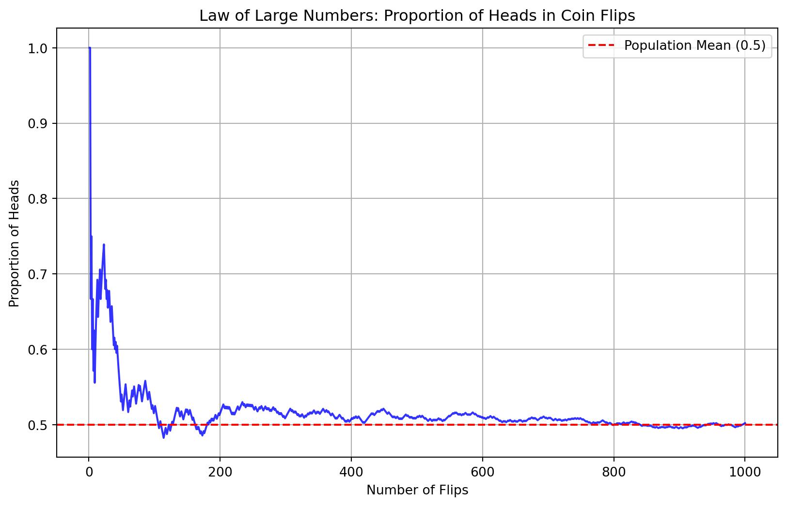
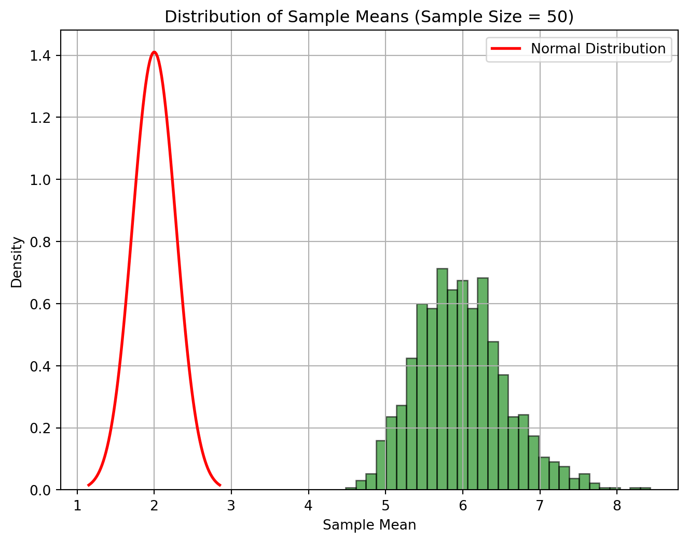
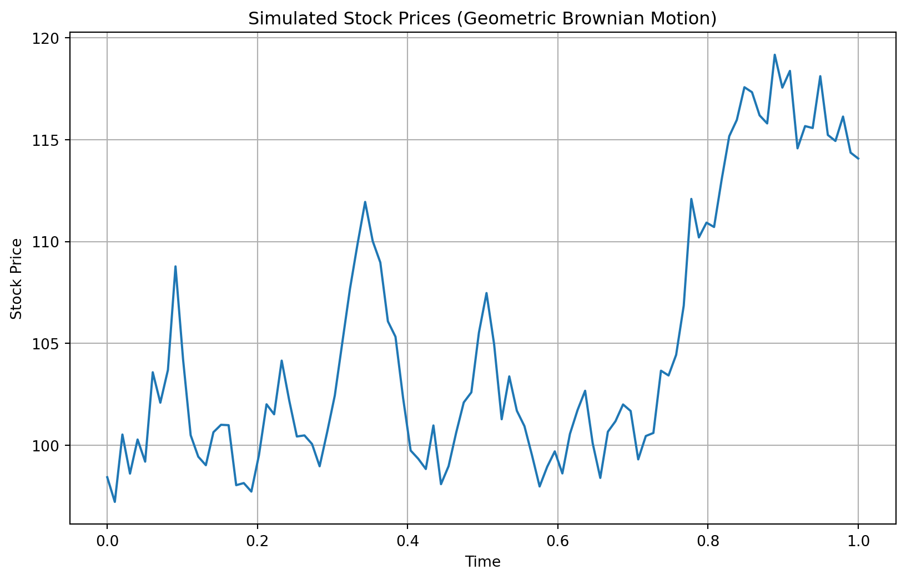

Chapter 4: Probability Theory
Basic Probability Concepts
Sample Space and Events
Definition
The sample space is the set of all possible outcomes of an experiment, and an event is a subset of the sample space. The sample space encompasses every possible result that could occur from an experiment, while an event represents specific outcomes that we are interested in.
Example
For a dice roll, the sample space is \(\{1, 2, 3, 4, 5, 6\}\), representing all possible results. An event could be rolling an even number, which includes the subset \(\{2, 4, 6\}\) of the sample space.
Subtopics
Simple Event: An event with a single outcome. For instance, rolling a 3 on a die is a simple event.
Compound Event: An event with multiple outcomes. For example, rolling an even number on a die (2, 4, or 6) is a compound event.
Axioms of Probability
Definition
Fundamental rules that probabilities must follow, ensuring they are well-defined and logically consistent.
Non-negativity: \(P(A) \geq 0\) for any event \(A\). Probabilities cannot be negative.
Normalization: \(P(S) = 1\) for the sample space \(S\). The probability of the entire sample space is 1.
Additivity: For mutually exclusive events \(A\) and \(B\), \(P(A \cup B) = P(A) + P(B)\). The probability of either event \(A\) or \(B\) occurring is the sum of their individual probabilities if they cannot occur simultaneously.
Example
If events \(A\) and \(B\) are rolling a 3 and a 5 on a die, \(P(A \cup B) = P(A) + P(B) = \frac{1}{6} + \frac{1}{6} = \frac{1}{3}\).
Mutually Exclusive and Independent Events
Mutually Exclusive Events
Definition
Events that cannot happen simultaneously.
Formula
\[ P(A \cap B) = 0 \]
Example
Rolling a 2 and a 3 on a single die roll are mutually exclusive events since both cannot occur at the same time.
Independent Events
Definition
Events whose occurrence does not affect each other.
Formula
\[ P(A \cap B) = P(A) \times P(B) \]
Example
Flipping a coin and rolling a die are independent events because the outcome of one does not affect the outcome of the other.
Probability Distributions
Discrete Distributions
Binomial Distribution
Definition
Represents the number of successes in a fixed number of independent Bernoulli trials.
Formula
\[ P(X=k) = \binom{n}{k}p^k(1-p)^{n-k} \] where \(n\) is the number of trials, \(k\) is the number of successes, and \(p\) is the probability of success on each trial.
Example
Number of heads in 10 coin flips. If each flip has a 0.5 probability of landing heads, then the binomial distribution models the probability of getting exactly \(k\) heads in 10 flips.
Show the code
import matplotlib.pyplot as plt
import numpy as np
from scipy.stats import binom
# Parameters for the binomial distribution
n = 10 # number of trials (coin flips)
p = 0.5 # probability of success (landing heads)
# Generate values for the number of successes (k) from 0 to n
k_values = np.arange(0, n+1)
# Calculate the probability mass function (PMF) of the binomial distribution
pmf_values = binom.pmf(k_values, n, p)
# Plotting the PMF
plt.figure(figsize=(8, 6))
plt.bar(k_values, pmf_values, color='skyblue', alpha=0.7)
# Adding labels and title
plt.xlabel('Number of Heads')
plt.ylabel('Probability')
plt.title(f'Binomial Distribution: n={n}, p={p}')
# Displaying the plot
plt.xticks(k_values)
plt.grid(True)
plt.show()
Poisson Distribution
Definition
Represents the number of events occurring in a fixed interval of time or space.
Formula
\[ P(X=k) = \frac{\lambda^k e^{-\lambda}}{k!} \] where \(\lambda\) is the average number of events in the interval and \(k\) is the number of events.
Example
Number of emails received per hour. If emails arrive at an average rate of 5 per hour, the Poisson distribution can model the probability of receiving exactly \(k\) emails in an hour.
Show the code
import matplotlib.pyplot as plt
import numpy as np
from scipy.stats import poisson
# Parameter for the Poisson distribution
mu = 5 # average number of events in the interval (emails received per hour)
# Generate values for the number of events (k) from 0 to a reasonable upper limit
k_values = np.arange(0, 21) # considering up to 20 events, adjust as needed
# Calculate the probability mass function (PMF) of the Poisson distribution
pmf_values = poisson.pmf(k_values, mu)
# Plotting the PMF
plt.figure(figsize=(8, 6))
plt.bar(k_values, pmf_values, color='skyblue', alpha=0.7)
# Adding labels and title
plt.xlabel('Number of Events')
plt.ylabel('Probability')
plt.title(f'Poisson Distribution: $\mu$={mu}')
# Displaying the plot
plt.xticks(k_values)
plt.grid(True)
plt.show()Geometric Distribution
Definition
Represents the number of trials needed to get the first success in repeated Bernoulli trials.
Formula
\[ P(X=k) = (1-p)^{k-1}p \] where \(p\) is the probability of success on each trial and \(k\) is the trial number of the first success.
Example
Number of coin flips until the first heads. If each flip has a 0.5 probability of landing heads, the geometric distribution models the probability that the first heads will occur on the \(k\)th flip.
Show the code
import matplotlib.pyplot as plt
import numpy as np
from scipy.stats import geom
# Parameter for the geometric distribution
p = 0.5 # probability of success on each trial (landing heads)
# Generate values for the number of trials (k) from 1 to a reasonable upper limit
k_values = np.arange(1, 11) # considering up to 10 trials, adjust as needed
# Calculate the probability mass function (PMF) of the geometric distribution
pmf_values = geom.pmf(k_values, p)
# Plotting the PMF
plt.figure(figsize=(8, 6))
plt.bar(k_values, pmf_values, color='skyblue', alpha=0.7)
# Adding labels and title
plt.xlabel('Number of Trials until First Success')
plt.ylabel('Probability')
plt.title(f'Geometric Distribution: p={p}')
# Displaying the plot
plt.xticks(k_values)
plt.grid(True)
plt.show()Negative Binomial Distribution
Definition
Represents the number of trials needed to achieve a specified number of successes in repeated Bernoulli trials.
Formula
\[ P(X=k) = \binom{k-1}{r-1}p^r(1-p)^{k-r} \] where \(r\) is the number of successes, \(k\) is the number of trials, and \(p\) is the probability of success on each trial.
Example
Number of coin flips needed to get 3 heads. If each flip has a 0.5 probability of landing heads, the negative binomial distribution models the probability that the third head will occur on the \(k\)th flip.
Show the code
import matplotlib.pyplot as plt
import numpy as np
from scipy.stats import nbinom
# Parameters for the negative binomial distribution
k = 3 # number of successes (heads)
p = 0.5 # probability of success on each trial (landing heads)
# Generate values for the number of trials (n) from k to a reasonable upper limit
n_values = np.arange(k, k + 11) # considering up to 10 additional trials, adjust as needed
# Calculate the probability mass function (PMF) of the negative binomial distribution
pmf_values = nbinom.pmf(n_values - k, k, p)
# Plotting the PMF
plt.figure(figsize=(8, 6))
plt.bar(n_values, pmf_values, color='skyblue', alpha=0.7)
# Adding labels and title
plt.xlabel('Number of Trials until {} Successes'.format(k))
plt.ylabel('Probability')
plt.title(f'Negative Binomial Distribution: k={k}, p={p}')
# Displaying the plot
plt.xticks(n_values)
plt.grid(True)
plt.show()Hypergeometric Distribution
Definition
Represents the number of successes in a sample drawn without replacement from a finite population.
Formula
\[ P(X=k) = \frac{\binom{K}{k}\binom{N-K}{n-k}}{\binom{N}{n}} \] where \(N\) is the population size, \(K\) is the number of successes in the population, \(n\) is the sample size, and \(k\) is the number of successes in the sample.
Example
Number of red balls drawn from an urn containing a mix of red and blue balls without replacement. If the urn contains 20 balls, 5 of which are red, the hypergeometric distribution models the probability of drawing exactly \(k\) red balls in a sample of \(n\) balls.
Show the code
import matplotlib.pyplot as plt
import numpy as np
from scipy.stats import hypergeom
# Parameters for the hypergeometric distribution
N = 20 # total number of balls in the urn (population size)
n = 7 # number of balls drawn in the sample (sample size)
K = 5 # number of red balls in the urn (number of successes in the population)
# Generate values for the number of red balls (k) in the sample from 0 to n
k_values = np.arange(max(0, n - (N - K)), min(K, n) + 1)
# Calculate the probability mass function (PMF) of the hypergeometric distribution
pmf_values = hypergeom.pmf(k_values, N, K, n)
# Plotting the PMF
plt.figure(figsize=(8, 6))
plt.bar(k_values, pmf_values, color='skyblue', alpha=0.7)
# Adding labels and title
plt.xlabel('Number of Red Balls in Sample')
plt.ylabel('Probability')
plt.title(f'Hypergeometric Distribution: N={N}, K={K}, n={n}')
# Displaying the plot
plt.xticks(k_values)
plt.grid(True)
plt.show()Continuous Distributions
Normal Distribution
Definition
Represents a continuous probability distribution with a bell-shaped curve, characterized by its mean (\(\mu\)) and standard deviation (\(\sigma\)).
Formula
\[ f(x) = \frac{1}{\sqrt{2\pi\sigma^2}} e^{-\frac{(x-\mu)^2}{2\sigma^2}} \] where \(x\) is the variable, \(\mu\) is the mean, and \(\sigma\) is the standard deviation.
Example
Heights of people, test scores. For instance, if the heights of adult males are normally distributed with a mean of 70 inches and a standard deviation of 3 inches, the normal distribution can model the probability of different height ranges.
Properties
- Symmetrical around the mean (\(\mu\)).
- 68-95-99.7 rule (empirical rule): Approximately 68% of data falls within one standard deviation of the mean, 95% within two, and 99.7% within three.
Show the code
import matplotlib.pyplot as plt
import numpy as np
# Parameters for the normal distribution
mu = 70 # mean
sigma = 3 # standard deviation
# Generate values along the x-axis (heights in this example)
x = np.linspace(mu - 4*sigma, mu + 4*sigma, 100) # adjust range as needed
# Calculate the probability density function (PDF) of the normal distribution
pdf = (1 / (sigma * np.sqrt(2 * np.pi))) * np.exp(-0.5 * ((x - mu) / sigma)**2)
# Plotting the PDF
plt.figure(figsize=(8, 6))
plt.plot(x, pdf, color='skyblue', linewidth=2)
# Adding labels and title
plt.xlabel('Height (inches)')
plt.ylabel('Probability Density')
plt.title(f'Normal Distribution: $\mu$={mu}, $\sigma$={sigma}')
# Adding vertical lines for mean and ±1, ±2, ±3 standard deviations
plt.axvline(mu, color='gray', linestyle='dashed', linewidth=1)
plt.axvline(mu + sigma, color='gray', linestyle='dashed', linewidth=1)
plt.axvline(mu - sigma, color='gray', linestyle='dashed', linewidth=1)
plt.axvline(mu + 2*sigma, color='gray', linestyle='dashed', linewidth=1)
plt.axvline(mu - 2*sigma, color='gray', linestyle='dashed', linewidth=1)
plt.axvline(mu + 3*sigma, color='gray', linestyle='dashed', linewidth=1)
plt.axvline(mu - 3*sigma, color='gray', linestyle='dashed', linewidth=1)
# Displaying the plot
plt.grid(True)
plt.show()Exponential Distribution
Definition
Represents the time between events in a Poisson process.
Formula
\[ f(x) = \lambda e^{-\lambda x} \text{ for } x \geq 0 \] where \(\lambda\) is the rate parameter.
Example
Time between arrivals of buses. If buses arrive at an average rate of 3 per hour, the exponential distribution can model the probability of waiting a certain amount of time for the next bus.
Show the code
import matplotlib.pyplot as plt
import numpy as np
from scipy.stats import expon
# Parameter for the exponential distribution (rate parameter)
rate = 3 # rate of events (buses arriving) per hour
# Generate values along the x-axis (waiting times in hours)
x = np.linspace(0, 3, 100) # adjust range as needed based on the rate
# Calculate the probability density function (PDF) of the exponential distribution
pdf = expon.pdf(x, scale=1/rate)
# Plotting the PDF
plt.figure(figsize=(8, 6))
plt.plot(x, pdf, color='skyblue', linewidth=2)
# Adding labels and title
plt.xlabel('Waiting Time (hours)')
plt.ylabel('Probability Density')
plt.title(f'Exponential Distribution: rate={rate} per hour')
# Displaying the plot
plt.grid(True)
plt.show()Gamma Distribution
Definition
Represents the waiting time until the occurrence of \(\alpha\) events in a Poisson process.
Formula
\[ f(x) = \frac{\lambda^\alpha x^{\alpha-1} e^{-\lambda x}}{\Gamma(\alpha)} \] where \(\alpha\) is the shape parameter, \(\lambda\) is the rate parameter, and \(\Gamma(\alpha)\) is the gamma function.
Example
The time until the third bus arrives, given that buses arrive at an average rate of 3 per hour.
Show the code
import matplotlib.pyplot as plt
import numpy as np
from scipy.stats import gamma
# Parameters for the gamma distribution
k = 3 # shape parameter
theta = 1 / 3 # scale parameter (inverse of rate parameter)
# Generate values along the x-axis (waiting times)
x = np.linspace(0, 20, 100) # adjust range as needed based on the parameters
# Calculate the probability density function (PDF) of the gamma distribution
pdf = gamma.pdf(x, k, scale=theta)
# Plotting the PDF
plt.figure(figsize=(8, 6))
plt.plot(x, pdf, color='skyblue', linewidth=2)
# Adding labels and title
plt.xlabel('Waiting Time')
plt.ylabel('Probability Density')
plt.title(f'Gamma Distribution: k={k}, $\\theta$={theta}')
# Displaying the plot
plt.grid(True)
plt.show()Beta Distribution
Definition
Represents a family of continuous probability distributions defined on the interval [0, 1], parameterized by two shape parameters, \(\alpha\) and \(\beta\).
Formula
\[ f(x) = \frac{x^{\alpha-1}(1-x)^{\beta-1}}{B(\alpha, \beta)} \] where \(B(\alpha, \beta)\) is the beta function.
Example
Modeling the probability of success in a binomial experiment, such as the proportion of voters favoring a candidate in an election.
Show the code
import matplotlib.pyplot as plt
import numpy as np
from scipy.stats import beta
# Parameters for the beta distribution
a = 2 # shape parameter 1
b = 5 # shape parameter 2
# Generate values along the x-axis (proportion of voters)
x = np.linspace(0, 1, 100) # values between 0 and 1
# Calculate the probability density function (PDF) of the beta distribution
pdf = beta.pdf(x, a, b)
# Plotting the PDF
plt.figure(figsize=(8, 6))
plt.plot(x, pdf, color='skyblue', linewidth=2)
# Adding labels and title
plt.xlabel('Proportion of Voters')
plt.ylabel('Probability Density')
plt.title(f'Beta Distribution: a={a}, b={b}')
# Displaying the plot
plt.grid(True)
plt.show()Weibull Distribution
Definition
Represents a continuous probability distribution used to model the time until failure in reliability analysis and survival studies.
Formula
\[ f(x) = \frac{k}{\lambda} \left(\frac{x}{\lambda}\right)^{k-1} e^{-(x/\lambda)^k} \] where \(k\) is the shape parameter and \(\lambda\) is the scale parameter.
Example
Modeling the lifespan of mechanical components, where the Weibull distribution can describe the probability of failure at different times.
Show the code
import matplotlib.pyplot as plt
import numpy as np
from scipy.stats import weibull_min
# Parameters for the Weibull distribution
shape = 1.5 # shape parameter
scale = 500 # scale parameter
# Generate values along the x-axis (time until failure)
x = np.linspace(0, 1500, 100) # adjust range as needed based on the parameters
# Calculate the probability density function (PDF) of the Weibull distribution
pdf = weibull_min.pdf(x, shape, scale=scale)
# Plotting the PDF
plt.figure(figsize=(8, 6))
plt.plot(x, pdf, color='skyblue', linewidth=2)
# Adding labels and title
plt.xlabel('Time until Failure')
plt.ylabel('Probability Density')
plt.title(f'Weibull Distribution: shape={shape}, scale={scale}')
# Displaying the plot
plt.grid(True)
plt.show()Lognormal Distribution
Definition
Represents a continuous probability distribution of a random variable whose logarithm is normally distributed.
Formula
\[ f(x) = \frac{1}{x\sigma\sqrt{2\pi}} e^{-\frac{(\log x - \mu)^2}{2\sigma^2}} \] where \(x\) is the variable, \(\mu\) is the mean of the logarithm of the variable, and \(\sigma\) is the standard deviation of the logarithm of the variable.
Example
Modeling the distribution of income, where incomes are positively skewed and can be modeled more accurately with a lognormal distribution than a normal distribution.
Show the code
import matplotlib.pyplot as plt
import numpy as np
from scipy.stats import lognorm
# Parameters for the lognormal distribution
mu = 0 # mean of the logarithm of the variable
sigma = 0.5 # standard deviation of the logarithm of the variable
# Generate values along the x-axis (income)
x = np.linspace(0, 10, 1000) # adjust range as needed based on the parameters
# Calculate the probability density function (PDF) of the lognormal distribution
pdf = lognorm.pdf(x, sigma, scale=np.exp(mu))
# Plotting the PDF
plt.figure(figsize=(8, 6))
plt.plot(x, pdf, color='skyblue', linewidth=2)
# Adding labels and title
plt.xlabel('Income')
plt.ylabel('Probability Density')
plt.title(f'Lognormal Distribution: $\mu$={mu}, $\sigma$={sigma}')
# Displaying the plot
plt.grid(True)
plt.show()Student’s t-Distribution
Definition
Used to estimate population parameters when the sample size is small and/or the population variance is unknown.
Formula
\[ f(x) = \frac{\Gamma((v+1)/2)}{\sqrt{v\pi}\Gamma(v/2)} \left(1 + \frac{x^2}{v}\right)^{-(v+1)/2} \] where \(v\) is the degrees of freedom.
Example
Constructing confidence intervals for the mean of a small sample of data. As the sample size increases, the t-distribution approaches the normal distribution.
Properties
- Similar to the normal distribution but with heavier tails, providing more robustness to outliers.
- As the sample size increases, the t-distribution converges to the normal distribution.
Show the code
import matplotlib.pyplot as plt
import numpy as np
from scipy.stats import t
# Parameters for the t-distribution
df = 10 # degrees of freedom
# Generate values along the x-axis (variable)
x = np.linspace(-5, 5, 1000) # adjust range as needed based on the degrees of freedom
# Calculate the probability density function (PDF) of the t-distribution
pdf = t.pdf(x, df)
# Plotting the PDF
plt.figure(figsize=(8, 6))
plt.plot(x, pdf, color='skyblue', linewidth=2)
# Adding labels and title
plt.xlabel('Variable')
plt.ylabel('Probability Density')
plt.title(f"Student's t-Distribution: df={df}")
# Displaying the plot
plt.grid(True)
plt.show()Chi-Square Distribution
Definition
Represents the distribution of the sum of the squares of \(v\) independent standard normal random variables.
Formula
\[ f(x) = \frac{1}{2^{v/2}\Gamma(v/2)} x^{(v/2)-1} e^{-x/2} \] where \(v\) is the degrees of freedom.
Example
Used in hypothesis testing, such as testing the independence of two categorical variables using the chi-square test of independence.
Show the code
import matplotlib.pyplot as plt
import numpy as np
from scipy.stats import chi2
# Parameters for the Chi-Square distribution
df = 5 # degrees of freedom
# Generate values along the x-axis (variable)
x = np.linspace(0, 20, 1000) # adjust range as needed based on the degrees of freedom
# Calculate the probability density function (PDF) of the Chi-Square distribution
pdf = chi2.pdf(x, df)
# Plotting the PDF
plt.figure(figsize=(8, 6))
plt.plot(x, pdf, color='skyblue', linewidth=2)
# Adding labels and title
plt.xlabel('Variable')
plt.ylabel('Probability Density')
plt.title(f'Chi-Square Distribution: df={df}')
# Displaying the plot
plt.grid(True)
plt.show()F-Distribution
Definition
Represents the distribution of the ratio of two independent chi-square variables, each divided by their respective degrees of freedom.
Formula
\[ f(x) = \frac{\sqrt{\frac{(d_1x)^{d_1}(d_2)^{d_2}}{(d_1x+d_2)^{d_1+d_2}}}}{xB(d_1/2, d_2/2)} \] where \(d_1\) and \(d_2\) are the degrees of freedom of the numerator and denominator chi-square variables.
Example
Used in analysis of variance (ANOVA) to compare the variances of different groups.
Show the code
import matplotlib.pyplot as plt
import numpy as np
from scipy.stats import f
# Parameters for the F-distribution
dfn = 5 # degrees of freedom of the numerator (numerator df)
dfd = 10 # degrees of freedom of the denominator (denominator df)
# Generate values along the x-axis (variable)
x = np.linspace(0.1, 5, 1000) # adjust range as needed based on the degrees of freedom
# Calculate the probability density function (PDF) of the F-distribution
pdf = f.pdf(x, dfn, dfd)
# Plotting the PDF
plt.figure(figsize=(8, 6))
plt.plot(x, pdf, color='skyblue', linewidth=2)
# Adding labels and title
plt.xlabel('Variable')
plt.ylabel('Probability Density')
plt.title(f'F-Distribution: dfn={dfn}, dfd={dfd}')
# Displaying the plot
plt.grid(True)
plt.show()Conditional Probability
Definition
Conditional probability is the probability of an event occurring given that another event has occurred.
Formula
\[ P(A|B) = \frac{P(A \cap B)}{P(B)} \] where \(P(A|B)\) is the probability of event \(A\) given event \(B\), \(P(A \cap B)\) is the probability of both events occurring, and \(P(B)\) is the probability of event \(B\).
Example
The probability of drawing an ace from a deck of cards given that a face card has been drawn. If there are 12 face cards in a deck of 52 cards, the conditional probability can be calculated using the above formula.
Bayes’ Theorem
Definition
Bayes’ theorem relates conditional probabilities and allows updating probabilities based on new information.
Formula
\[ P(A|B) = \frac{P(B|A) \times P(A)}{P(B)} \] where \(P(A|B)\) is the posterior probability of event \(A\) given event \(B\), \(P(B|A)\) is the likelihood of event \(B\) given event \(A\), \(P(A)\) is the prior probability of event \(A\), and \(P(B)\) is the marginal probability of event \(B\).
Example
Updating the probability of having a disease given a positive test result. If \(P(D)\) is the prior probability of the disease, \(P(T|D)\) is the probability of a positive test given the disease, and \(P(T)\) is the probability of a positive test, Bayes’ theorem can be used to update the probability of having the disease given the positive test.
Random Variables
Expected Value
Definition
The expected value (or mean) of a random variable is the long-run average value it takes.
Formula
\[ E(X) = \sum x_i P(x_i) \text{ for discrete variables, } E(X) = \int x f(x) dx \text{ for continuous variables} \]
Example
The expected number of heads in 10 coin flips, where each flip has a 0.5 probability of landing heads, is \(10 \times 0.5 = 5\).
Variance
Definition
Variance measures the dispersion of a random variable from its mean.
Formula
\[ \text{Var}(X) = E[(X - E(X))^2] \]
Example
The variance of a fair die roll, where the expected value is 3.5, can be calculated as \(\sum [(x_i - 3.5)^2 \times P(x_i)] = 2.92\).
Covariance
Definition
Covariance measures the joint variability of two random variables.
Formula
\[ \text{Cov}(X, Y) = E[(X - E(X))(Y - E(Y))] \]
Example
Covariance between the returns of two stocks. If the covariance is positive, the stocks tend to move together. If negative, they move inversely.
Moment Generating Functions
Definition
Moment generating functions (MGFs) provide a way to find all moments (expected values of powers) of a random variable.
Formula
\[ M_X(t) = E[e^{tX}] \]
Example
The MGF of a normal random variable with mean \(\mu\) and variance \(\sigma^2\) is \(M_X(t) = \exp(\mu t + \frac{1}{2}\sigma^2 t^2)\). MGFs are useful for deriving the mean and variance of the distribution.
Show the code
import numpy as np
import matplotlib.pyplot as plt
from scipy.stats import norm
# Parameters for the normal distribution
mu = 1.0 # mean
sigma = 2.0 # standard deviation
# Function to calculate the MGF of a normal distribution
def mgf_normal(t, mu, sigma):
return np.exp(mu * t + (sigma**2 * t**2) / 2)
# Generate values of t
t_values = np.linspace(-2, 2, 1000)
# Calculate the MGF values
mgf_values = mgf_normal(t_values, mu, sigma)
# Plotting the MGF
plt.figure(figsize=(8, 6))
plt.plot(t_values, mgf_values, color='skyblue', linewidth=2)
# Adding labels and title
plt.xlabel('t')
plt.ylabel('M_X(t)')
plt.title(f'Moment Generating Function of Normal Distribution: $\mu$={mu}, $\sigma^2$={sigma**2}')
# Displaying the plot
plt.grid(True)
plt.show()Law of Large Numbers
Definition
The Law of Large Numbers states that as the sample size increases, the sample mean will converge to the population mean.
Example
If you repeatedly flip a coin, the proportion of heads will approach 0.5 as the number of flips becomes very large.
Show the code
import numpy as np
import matplotlib.pyplot as plt
# Parameters
num_trials = 1000 # number of trials (flips)
num_flips = np.arange(1, num_trials + 1) # array of sample sizes
# Simulating coin flips
flips = np.random.randint(0, 2, size=num_trials) # 0 for tails, 1 for heads
cumulative_heads = np.cumsum(flips) # cumulative number of heads
# Calculating proportion of heads
proportion_heads = cumulative_heads / num_flips
# Plotting
plt.figure(figsize=(10, 6))
plt.plot(num_flips, proportion_heads, linestyle='-', color='b', alpha=0.8)
plt.axhline(y=0.5, color='r', linestyle='--', label='Population Mean (0.5)')
plt.title('Law of Large Numbers: Proportion of Heads in Coin Flips')
plt.xlabel('Number of Flips')
plt.ylabel('Proportion of Heads')
plt.legend()
plt.grid(True)
plt.show()
Central Limit Theorem
Definition
The Central Limit Theorem (CLT) states that the distribution of the sample means approaches a normal distribution as the sample size grows, regardless of the population’s distribution.
Formula
\[ \bar{X} \sim N\left(\mu, \frac{\sigma^2}{n}\right) \]
Example
If you take many samples of size 50 from a skewed population and plot the sample means, the resulting distribution will be approximately normal. This approximation enables the use of normal distribution properties to make inferences about the population mean.
Show the code
import numpy as np
import matplotlib.pyplot as plt
from scipy.stats import norm, expon
# Parameters for the skewed population distribution (exponential in this case)
population_mean = 2.0
population_variance = 4.0
# Sample size and number of samples
sample_size = 50
num_samples = 1000
# Function to generate samples from the skewed population
def generate_samples(sample_size, num_samples):
samples = expon.rvs(scale=population_variance, loc=population_mean, size=(sample_size, num_samples))
sample_means = np.mean(samples, axis=0)
return sample_means
# Generate sample means
sample_means = generate_samples(sample_size, num_samples)
# Plotting the histogram of sample means
plt.figure(figsize=(8, 6))
plt.hist(sample_means, bins=30, density=True, alpha=0.6, color='g', edgecolor='black')
# Plotting the theoretical normal distribution for comparison
mu = population_mean
sigma = np.sqrt(population_variance / sample_size)
x = np.linspace(mu - 3*sigma, mu + 3*sigma, 100)
plt.plot(x, norm.pdf(x, mu, sigma), 'r-', lw=2, label='Normal Distribution')
# Adding labels and title
plt.xlabel('Sample Mean')
plt.ylabel('Density')
plt.title(f'Distribution of Sample Means (Sample Size = {sample_size})')
# Adding legend
plt.legend()
# Displaying the plot
plt.grid(True)
plt.show()
Markov Chains
Definition
Markov chains are stochastic processes where the probability of transitioning to the next state depends only on the current state and not on the previous states.
Formula
\[ P(X_{n+1} = x | X_n = x_n, X_{n-1} = x_{n-1}, \ldots, X_0 = x_0) = P(X_{n+1} = x | X_n = x_n) \]
Example
Weather modeling, where the probability of tomorrow’s weather depends only on today’s weather and not on the weather of previous days.
Show the code
import numpy as np
# Define the states and transition matrix for weather states (sunny, cloudy, rainy)
states = ['Sunny', 'Cloudy', 'Rainy']
transition_matrix = np.array([[0.8, 0.15, 0.05],
[0.2, 0.6, 0.2],
[0.1, 0.2, 0.7]])
# Function to simulate weather transitions
def simulate_weather(days):
current_state = np.random.choice(states) # initial state
weather_sequence = [current_state]
for _ in range(days - 1):
current_index = states.index(current_state)
next_state = np.random.choice(states, p=transition_matrix[current_index])
weather_sequence.append(next_state)
current_state = next_state
return weather_sequence
# Simulate weather for 7 days
days = 7
sequence = simulate_weather(days)
print(f"Weather sequence for {days} days:")
print(sequence)Weather sequence for 7 days:
['Cloudy', 'Rainy', 'Rainy', 'Rainy', 'Rainy', 'Rainy', 'Cloudy']Stochastic Processes
Definition
Stochastic processes are collections of random variables indexed by time or space, representing systems that evolve randomly over time.
Example
Modeling stock prices, where prices are influenced by random fluctuations over time.
Show the code
import numpy as np
import matplotlib.pyplot as plt
# Parameters for geometric Brownian motion
mu = 0.1 # expected return
sigma = 0.2 # volatility (standard deviation)
S0 = 100 # initial stock price
dt = 0.01 # time increment
T = 1.0 # total time period
N = int(T / dt) # number of time steps
# Function to simulate geometric Brownian motion
def simulate_stock_price(S0, mu, sigma, N, dt):
W = np.random.standard_normal(size=N)
W = np.cumsum(W) * np.sqrt(dt) # Brownian motion
X = (mu - 0.5 * sigma**2) * np.arange(0, T, dt) + sigma * W
S = S0 * np.exp(X) # geometric Brownian motion
return S
# Simulate stock prices
stock_prices = simulate_stock_price(S0, mu, sigma, N, dt)
# Plotting the simulated stock prices
plt.figure(figsize=(10, 6))
plt.plot(np.linspace(0, T, N), stock_prices)
plt.xlabel('Time')
plt.ylabel('Stock Price')
plt.title('Simulated Stock Prices (Geometric Brownian Motion)')
plt.grid(True)
plt.show()
Probability Generating Functions
Definition
Probability generating functions (PGFs) provide a way to find the probability distribution of a discrete random variable.
Formula
\[ G_X(t) = E[t^X] \]
Example
The PGF of a binomial random variable with parameters \(n\) and \(p\) is \(G_X(t) = (pt + 1 - p)^n\). PGFs are useful for finding probabilities and moments of discrete distributions.
Show the code
import numpy as np
import matplotlib.pyplot as plt
def binomial_pgf(n, p, z):
return (p*z + 1 - p)**n
# Parameters for the binomial distribution
n = 10 # number of trials
p = 0.3 # probability of success
# Plotting the PGF
z_values = np.linspace(-1, 1, 100)
pgf_values = binomial_pgf(n, p, z_values)
plt.figure(figsize=(8, 6))
plt.plot(z_values, pgf_values, label=f'Binomial PGF (n={n}, p={p})', color='blue', lw=2)
plt.title('Probability Generating Function (PGF)')
plt.xlabel('z')
plt.ylabel('G_X(z)')
plt.legend()
plt.grid(True)
plt.show()Characteristic Functions
Definition
Characteristic functions uniquely define the probability distribution of a random variable and are used for proving limit theorems and deriving distributions.
Formula
\[ \phi_X(t) = E[e^{itX}] \]
Example
The characteristic function of a normal random variable with mean \(\mu\) and variance \(\sigma^2\) is \(\phi_X(t) = \exp(i\mu t - \frac{1}{2}\sigma^2 t^2)\). Characteristic functions are used in advanced probability theory and statistical inference.
Show the code
import numpy as np
import matplotlib.pyplot as plt
def normal_characteristic_function(t, mu, sigma):
return np.exp(1j * t * mu - 0.5 * (sigma * t)**2)
# Parameters for the normal distribution
mu = 0.5 # mean
sigma = 1.0 # standard deviation
# Plotting the characteristic function
t_values = np.linspace(-5, 5, 200)
phi_values = normal_characteristic_function(t_values, mu, sigma)
plt.figure(figsize=(8, 6))
plt.plot(t_values, phi_values.real, label='Real part', color='blue', lw=2)
plt.plot(t_values, phi_values.imag, label='Imaginary part', color='red', lw=2)
plt.title('Characteristic Function of Normal Distribution')
plt.xlabel('t')
plt.ylabel('phi_X(t)')
plt.legend()
plt.grid(True)
plt.show()Questions
Probability Distributions
1. Binomial Distribution
Question: How would you use the binomial distribution to model the probability of a user liking a certain number of posts out of a set number of viewed posts on Instagram?
Answer: The binomial distribution models the number of successes (likes) in a fixed number of independent trials (viewed posts), each with the same probability of success (liking a post). \[ P(X = k) = \binom{n}{k} p^k (1-p)^{n-k} \] where \(n\) is the number of trials, \(k\) is the number of successes, and \(p\) is the probability of success.
Example: If a user views 10 posts (\(n = 10\)) and the probability of liking each post is 0.3 (\(p = 0.3\)), the probability of liking exactly 3 posts is: \[ P(X = 3) = \binom{10}{3} (0.3)^3 (0.7)^7 \approx 0.2668 \]
2. Poisson Distribution
Question: Explain how you would use the Poisson distribution to model the number of comments a user receives on their posts per day.
Answer: The Poisson distribution models the number of events (comments) occurring in a fixed interval of time or space, given the events occur independently and at a constant rate (\(\lambda\)). \[ P(X = k) = \frac{\lambda^k e^{-\lambda}}{k!} \] where \(\lambda\) is the average number of events per interval.
Example: If a user receives an average of 5 comments per day (\(\lambda = 5\)), the probability of receiving exactly 3 comments in a day is: \[ P(X = 3) = \frac{5^3 e^{-5}}{3!} \approx 0.1404 \]
3. Geometric Distribution
Question: How would you use the geometric distribution to model the number of posts a user views before liking one on Instagram?
Answer: The geometric distribution models the number of trials until the first success (like), with each trial having the same probability of success (\(p\)). \[ P(X = k) = (1-p)^{k-1} p \] where \(k\) is the number of trials.
Example: If the probability of liking a post is 0.2 (\(p = 0.2\)), the probability that a user views 3 posts before liking one is: \[ P(X = 3) = (0.8)^{2} \cdot 0.2 = 0.128 \]
4. Negative Binomial Distribution
Question: Describe how the negative binomial distribution can be used to model the number of unsuccessful attempts before a user successfully shares a post a certain number of times on Facebook.
Answer: The negative binomial distribution models the number of failures before a specified number of successes, with each trial having the same probability of success (\(p\)). \[ P(X = k) = \binom{k+r-1}{k} (1-p)^k p^r \] where \(r\) is the number of successes and \(k\) is the number of failures.
Example: If a user successfully shares a post with a probability of 0.1 (\(p = 0.1\)) and we are interested in the number of unsuccessful attempts before 3 successful shares (\(r = 3\)), the probability of exactly 5 unsuccessful attempts is: \[ P(X = 5) = \binom{5+3-1}{5} (0.9)^5 (0.1)^3 \approx 0.0746 \]
5. Hypergeometric Distribution
Question: Explain how the hypergeometric distribution can be used to model the probability of selecting a certain number of active users from a sample of Facebook users.
Answer: The hypergeometric distribution models the number of successes in a sample drawn without replacement from a finite population. \[ P(X = k) = \frac{\binom{K}{k} \binom{N-K}{n-k}}{\binom{N}{n}} \] where \(N\) is the population size, \(K\) is the number of successes in the population, \(n\) is the sample size, and \(k\) is the number of successes in the sample.
Example: If there are 100 users (\(N\)), 20 of whom are active (\(K\)), and we select 10 users (\(n\)), the probability of selecting exactly 3 active users (\(k\)) is: \[ P(X = 3) = \frac{\binom{20}{3} \binom{80}{7}}{\binom{100}{10}} \approx 0.201 \]
Continuous Distributions
6. Normal Distribution
Question: How would you use the normal distribution to model the time users spend on Instagram daily?
Answer: The normal distribution models continuous data with a symmetric, bell-shaped curve defined by the mean (\(\mu\)) and standard deviation (\(\sigma\)). \[ f(x) = \frac{1}{\sigma \sqrt{2\pi}} e^{-\frac{(x-\mu)^2}{2\sigma^2}} \]
Example: If the average time spent on Instagram is 2 hours (\(\mu = 2\)) with a standard deviation of 0.5 hours (\(\sigma = 0.5\)), the probability of spending between 1.5 and 2.5 hours can be calculated using the cumulative distribution function (CDF).
7. Exponential Distribution
Question: Explain how the exponential distribution can be used to model the time between user interactions on a social media platform.
Answer: The exponential distribution models the time between events in a Poisson process with a constant rate (\(\lambda\)). \[ f(x) = \lambda e^{-\lambda x} \]
Example: If the average time between interactions is 10 minutes (\(\lambda = 0.1\)), the probability that the next interaction occurs within 5 minutes is: \[ P(X \leq 5) = 1 - e^{-0.1 \times 5} \approx 0.3935 \]
8. Gamma Distribution
Question: Describe how you would use the gamma distribution to model the total time spent on Instagram by a user in a week.
Answer: The gamma distribution models the sum of multiple exponentially distributed waiting times. \[ f(x; \alpha, \beta) = \frac{\beta^\alpha x^{\alpha-1} e^{-\beta x}}{\Gamma(\alpha)} \] where \(\alpha\) is the shape parameter and \(\beta\) is the rate parameter.
Example: If the total time spent on Instagram per day follows an exponential distribution with a rate of 0.2, the weekly total time can be modeled using a gamma distribution with \(\alpha = 7\) (days) and \(\beta = 0.2\).
9. Beta Distribution
Question: How would you use the beta distribution to model the probability of user engagement rates on a social media platform?
Answer: The beta distribution models probabilities or proportions with parameters \(\alpha\) and \(\beta\). \[ f(x; \alpha, \beta) = \frac{x^{\alpha-1} (1-x)^{\beta-1}}{B(\alpha, \beta)} \] where $ B(, ) $ is the beta function.
Example: If historical data suggests engagement rates are typically between 20% and 80%, and we estimate \(\alpha = 2\) and \(\beta = 3\), the beta distribution can model the engagement rate probabilities.
10. Weibull Distribution
Question: Explain how the Weibull distribution can be used to model the time until a user churns from a social media platform.
Answer: The Weibull distribution models the time to failure or time until an event occurs, with shape parameter \(k\) and scale parameter \(\lambda\). \[ f(x; k, \lambda) = \frac{k}{\lambda} \left( \frac{x}{\lambda} \right)^{k-1} e^{-(x/\lambda)^k} \]
Example: If we assume \(k = 1.5\) and \(\lambda = 2\) years for user churn, we can model the distribution of time until a user leaves the platform.
11. Lognormal Distribution
Question: Describe how the lognormal distribution can be used to model the distribution of user engagement metrics on Instagram.
Answer: The lognormal distribution models a variable whose logarithm is normally distributed. \[ f(x) = \frac{1}{x \sigma \sqrt{2\pi}} e^{-\frac{(\ln x - \mu)^2}{2\sigma^2}} \]
Example: If the logarithm of user engagement metrics (likes, comments) follows a normal distribution with \(\mu = 1\) and \(\sigma = 0.5\), the engagement metrics themselves follow a lognormal distribution.
12. Student’s t-Distribution
Question: How would you use the Student’s t-distribution to analyse the average engagement difference between two groups of users with small sample sizes on Facebook?
Answer: The Student’s t-distribution is used when the sample size is small, and the population variance is unknown. \[ t = \frac{\bar{x}_1 - \bar{x}_2}{\sqrt{\frac{s_1^2}{n_1} + \frac{s_2^2}{n_2}}} \] where \(\bar{x}_1\) and \(\bar{x}_2\) are the sample means, \(s_1\) and \(s_2\) are the sample standard deviations, and \(n_1\) and \(n_2\) are the sample sizes.
Example: Comparing engagement metrics between two user groups with sample sizes of 10 each.
13. Chi-Square Distribution
Question: Explain how the chi-square distribution can be used to test the independence of user interactions and content type on a social media platform.
Answer: The chi-square distribution is used in hypothesis testing for categorical data. \[ \chi^2 = \sum \frac{(O_i - E_i)^2}{E_i} \] where \(O_i\) are observed frequencies and \(E_i\) are expected frequencies.
Example: Testing if user interactions (likes, comments, shares) are independent of content type (photos, videos) using a chi-square test.
14. F-Distribution
Question: Describe how the F-distribution can be used in an ANOVA test to compare user engagement across different social media platforms.
Answer: The F-distribution is used in ANOVA to compare variances. \[ F = \frac{\text{Variance between groups}}{\text{Variance within groups}} \]
Example: Comparing the mean engagement across Facebook, Instagram, and Twitter to see if there are significant differences.
Conditional Probability
15. Conditional Probability
Question: How would you use conditional probability to determine the likelihood of a user liking a post given that they have commented on it?
Answer: Conditional probability is the probability of an event given that another event has occurred. \[ P(A|B) = \frac{P(A \cap B)}{P(B)} \]
Example: If the probability of a user commenting on a post is 0.2 (\(P(B) = 0.2\)) and the probability of both liking and commenting is 0.1 (\(P(A \cap B) = 0.1\)), the probability of liking given commenting is: \[ P(A|B) = \frac{0.1}{0.2} = 0.5 \]
Bayes’ Theorem
16. Bayes’ Theorem
Question: Explain how Bayes’ theorem can be used to update the probability of a user becoming a premium subscriber based on their engagement level.
Answer: Bayes’ theorem updates the probability of an event based on new evidence. \[ P(A|B) = \frac{P(B|A) P(A)}{P(B)} \]
Example: If 10% of users are premium subscribers (\(P(A) = 0.1\)), 70% of premium subscribers have high engagement (\(P(B|A) = 0.7\)), and 20% of all users have high engagement (\(P(B) = 0.2\)), the updated probability that a user with high engagement is a premium subscriber is: \[ P(A|B) = \frac{0.7 \times 0.1}{0.2} = 0.35 \]
Random Variables
17. Expected Value
Question: How would you calculate the expected value of the number of likes a post receives on Instagram?
Answer: The expected value is the sum of all possible values weighted by their probabilities. \[ E(X) = \sum x_i P(x_i) \]
Example: If a post has a 0.5 probability of receiving 10 likes and a 0.5 probability of receiving 20 likes, the expected value is: \[ E(X) = 10 \times 0.5 + 20 \times 0.5 = 15 \]
18. Variance
Question: Explain how you would calculate the variance of user engagement metrics on Facebook.
Answer: Variance measures the dispersion of a random variable. \[ \text{Var}(X) = E[(X - E(X))^2] \]
Example: For engagement metrics [10, 20, 30] with mean 20, the variance is: \[ \text{Var}(X) = \frac{(10-20)^2 + (20-20)^2 + (30-20)^2}{3} = \frac{100 + 0 + 100}{3} = 66.67 \]
19. Covariance
Question: How would you use covariance to understand the relationship between user interactions and time spent on a social media platform?
Answer: Covariance measures the joint variability of two random variables. \[ \text{Cov}(X, Y) = E[(X - E(X))(Y - E(Y))] \]
Example: For user interactions and time spent data points [(10, 1), (20, 2), (30, 3)] with means 20 and 2, respectively, the covariance is: \[ \text{Cov}(X, Y) = \frac{(10-20)(1-2) + (20-20)(2-2) + (30-20)(3-2)}{3} = 10 \]
20. Moment Generating Functions
Question: Describe the use of moment generating functions (MGFs) in summarising the distribution of user engagement metrics.
Answer: MGFs summarise all moments of a distribution. The MGF of a random variable \(X\) is defined as: \[ M_X(t) = E[e^{tX}] \]
Example: The MGF can be used to find the mean and variance of user engagement metrics by differentiating the MGF and evaluating at \(t = 0\).
Law of Large Numbers
21. Law of Large Numbers
Question: How does the law of large numbers apply to the average user engagement observed on a social media platform?
Answer: The law of large numbers states that as the sample size increases, the sample mean converges to the population mean.
Example: As we collect more data on user engagement, the average engagement observed will approximate the true average engagement of the entire user base.
Central Limit Theorem
22. Central Limit Theorem
Question: Explain how the central limit theorem can be used to make inferences about user engagement metrics on Instagram.
Answer: The central limit theorem states that the distribution of the sample mean approaches a normal distribution as the sample size increases, regardless of the population’s distribution.
Example: For large samples of user engagement data, we can assume the sample mean follows a normal distribution, allowing us to construct confidence intervals and perform hypothesis tests.
Markov Chains
23. Markov Chains
Question: How would you use Markov chains to model user behaviour on a social media platform?
Answer: Markov chains model systems that transition between states with probabilities dependent only on the current state.
Example: To model user behaviour, states could represent different user activities (browsing, liking, commenting). Transition probabilities between states are estimated from historical data, predicting future user behaviour patterns.
Stochastic Processes
24. Stochastic Processes
Question: Explain the concept of stochastic processes and how they can be applied to model user activity over time on Facebook.
Answer: Stochastic processes are collections of random variables indexed by time, modelling the evolution of systems over time.
Example: Modelling user activity as a stochastic process allows for predictions about user engagement patterns, such as the frequency and timing of posts, likes, and comments.
Probability Generating Functions
25. Probability Generating Functions
Question: How would you use probability generating functions to analyse the distribution of the number of comments per post on Instagram?
Answer: Probability generating functions (PGFs) summarise the probability distribution of a discrete random variable.
Example: The PGF of the number of comments per post \(X\) is: \[ G_X(t) = E[t^X] \] The PGF can be used to find moments and probabilities of \(X\), providing insights into the distribution of comments.
Characteristic Functions
26. Characteristic Functions
Question: Describe how characteristic functions can be used to analyse the distribution of user engagement metrics on a social media platform.
Answer: Characteristic functions (CFs) provide an alternative to MGFs for summarising the distribution of random variables.
Example: The CF of a random variable \((X)\) is: \[ \phi_X(t) = E[e^{itX}] \] CFs can be used to find the distribution’s moments and facilitate the proof of limit theorems, helping analyse user engagement metrics.